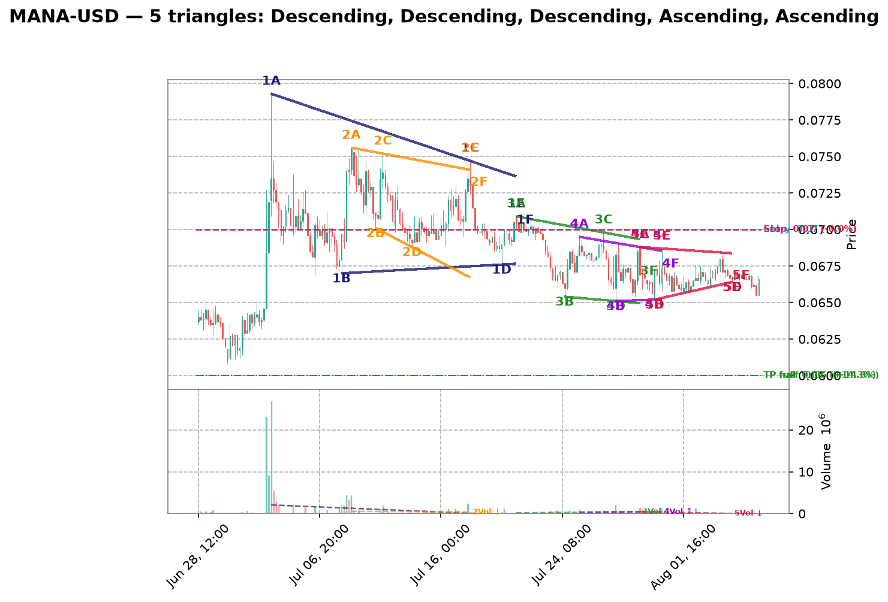
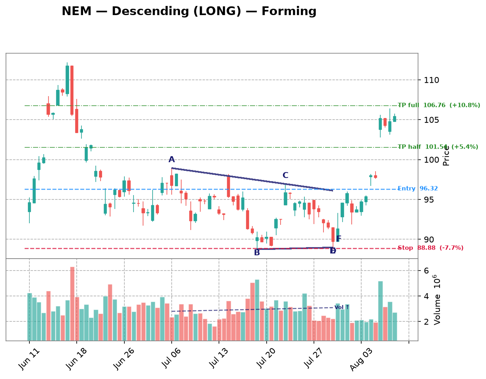

| Date | Symbol | TF | Pattern | Dir | Verdict | Claude Pattern | Claude Dir | Conf | Rec |
|---|---|---|---|---|---|---|---|---|---|
| crypto 10 patterns | |||||||||
| 2026-08-13 | DOGE-USD | 1d | Descending | LONG | Disputed | ? | ? | Certainty: 78 | — |
Chart  Claude Notes The right edge of the chart (Jul-Aug) shows price essentially flat-lining in a narrow range around 0.069-0.075 after a prolonged downtrend from May highs. There isn't a clear descending upper trendline with lower highs converging into a flat support - instead price has already flattened out into a tight horizontal consolidation with low volatility, more like a basing/rectangle than a triangle. The algorithm may be picking up the earlier down-sloping move (Jun-Jul) as the 'descending' upper boundary, but by early August price is chopping sideways without a clear apex point being approached, and both boundaries look roughly flat rather than one being flat and one descending. This looks more like consolidation after a downtrend rather than an active triangle squeeze with defined converging trendlines and multiple touch points on each line. Presence certainty 78/100 — how sure Claude is that its found/not-found call is correct | |||||||||
| 2026-08-13 | XRP-USD | 1d | Descending | LONG | Disputed | ? | ? | Certainty: 72 | — |
Chart  Claude Notes The right side of the chart (Jun-Aug) shows a tight sideways range roughly between 1.02 and 1.20, but this looks more like a flat consolidation/rectangle than a converging triangle. Both the highs (~1.15-1.20) and lows (~1.02-1.08) are roughly flat rather than one line staying flat while the other clearly slopes toward it - there's no visible narrowing of the range as we approach the right edge. A descending triangle would need a series of distinctly lower highs compressing toward a flat support; instead the highs and lows both look choppy and range-bound without clear convergence. I don't see a well-defined apex forming, so I'm rejecting the algorithm's descending triangle call, though the sideways compression does have some triangle-like character which keeps my confidence from being higher. Presence certainty 72/100 — how sure Claude is that its found/not-found call is correct | |||||||||
| 2026-08-13 | VET-USD | 1d | Descending | LONG | Disputed | ? | ? | Certainty: 68 | — |
Chart  Claude Notes From late June through August, VET has been trading in a tight, roughly flat range between ~0.0043 and ~0.0050 with no clear convergence — highs and lows are both essentially flat, not narrowing toward an apex. This looks more like a horizontal consolidation/rectangle than a descending triangle, since a descending triangle requires a clearly falling upper trendline (lower highs) against a flat support. Here the upper boundary is not making consistently lower highs; it's oscillating sideways. The algorithm likely mistook the flat consolidation after the May-June downtrend for a descending triangle, but there's no visible narrowing of range near the right edge. I don't see a credible triangle forming at the right edge — it's a sideways range, not a converging wedge. Presence certainty 68/100 — how sure Claude is that its found/not-found call is correct | |||||||||
| 2026-08-13 | ETH-USD | 1d | Symmetric | SYMMETRIC | Disputed | ? | ? | Certainty: 68 | — |
Chart  Claude Notes The right-side price action (mid-Jun through end of chart) shows a recovery from ~1600 to a tight consolidation around 1850-1950, but this looks more like a flat/rectangular consolidation than a converging triangle. Highs are roughly flat (~1950-1990) and lows are also roughly flat (~1820-1870) with no clear narrowing convergence pattern - candles have been oscillating sideways in a fairly consistent range for the last ~15-20 candles rather than compressing toward an apex. There isn't a clear rising lower trendline or falling upper trendline that would define a symmetric triangle; it's closer to a range-bound/rectangle consolidation after a downtrend. I don't see the classic converging touch points (3+ per side narrowing) that would confirm the algorithm's symmetric triangle call. Presence certainty 68/100 — how sure Claude is that its found/not-found call is correct | |||||||||
| 2026-08-13 | SOL-USD | 1d | Symmetric | SYMMETRIC | Both detect, differ on type | Descending | SHORT | Quality: 45 | avoid |
Chart  Claude Notes From late June (~Jun 30) peak near 83 the price shows a series of lower highs (83, 81, 79, 78, 77, 76, 75) while the lows from mid-July onward cluster in a tighter, relatively flat band around 72-75. This looks more like a descending triangle (flattish support, falling resistance) than a true symmetric wedge, since the lower boundary isn't clearly rising - it's roughly horizontal with only a mild downward drift. The range does compress toward the right edge, consistent with an apex forming, and price is still contained within the boundaries (no clear breakout yet). I partially disagree with the 'Symmetric' label - the structure reads closer to descending due to the flatter support line, though the difference is subtle given the narrow recent price action. Confidence is moderate since the touches are somewhat loose and the pattern is not textbook clean. Symbol Research Solana (SOL) is a high-throughput layer-1 blockchain used for DeFi, NFTs, and payments. It has seen periods of high volatility tied to network outages, ecosystem growth (memecoins, DePIN projects), and broader crypto market cycles. Price action is highly correlated with BTC/ETH sentiment and macro risk appetite. Market Sentiment neutral Presence certainty 58/100 — how sure Claude is that its found/not-found call is correct Pattern quality 45/100 — how clean/tradable this specific triangle is Research confidence 15/100 — Phase B research conviction Supporting Signals
Opposing Signals
| |||||||||
| 2026-08-13 | MANA-USD | 4h | Ascending | SHORT | Disputed | ? | ? | Certainty: 78 | — |
Chart  Claude Notes The right side of the chart (late July into August) shows a choppy, range-bound consolidation between roughly 0.0655 and 0.0680, but there's no clear convergence structure. Highs and lows are essentially flat/oscillating rather than forming a rising support line or a flat resistance with higher lows - the classic ascending triangle signature. Price action looks more like sideways noise/consolidation after a downtrend from the 0.075 peak, not a compressing wedge. I don't see a well-defined rising trendline connecting higher lows, nor a consistent flat resistance being tested multiple times with precision. The algorithm's flag seems to be picking up on the general flattening of volatility rather than an actual triangle geometry. No decisive breakout is visible either, but the lack of clean converging trendlines makes this a low-confidence triangle at best, so I reject it. Presence certainty 78/100 — how sure Claude is that its found/not-found call is correct | |||||||||
| 2026-08-13 | SAND-USD | 4h | Descending | LONG | Disputed | ? | ? | Certainty: 72 | — |
Chart  Claude Notes The right side of the chart (Jul 30 - Aug 6) shows price oscillating in a fairly flat, choppy range between roughly 0.0405 and 0.0440 with no clear convergence. Highs are not consistently declining (there are similar peaks around Jul 31 and Aug 2), and lows are not rising - they're roughly flat to slightly declining as well. This looks more like a flat consolidation/range-bound channel than a descending triangle with a clearly sloping upper resistance line. There's no visible narrowing of the range as we approach the right edge, which is the key requirement for a triangle pattern. The algorithm's flag appears to be a false positive - the price action is more consistent with sideways consolidation after a downtrend rather than a converging triangle. Presence certainty 72/100 — how sure Claude is that its found/not-found call is correct | |||||||||
| 2026-08-13 | XLM-USD | 3h | Descending | LONG | Disputed | ? | ? | Certainty: 85 | — |
Chart  Claude Notes The right side of the chart shows a persistent downtrend from ~0.195 down to ~0.160, with consistently lower highs and lower lows - not a converging pattern. There's no flat or rising support line; each swing low is lower than the previous one (0.177 -> 0.170 -> 0.165 -> 0.160), and the highs are also declining. This is a clean downtrend/potential descending channel structure, not an ascending triangle. The algorithm likely mistook the minor consolidation around Jul 27-Aug 2 (0.170-0.177 range) as basing, but price broke down from that range rather than compressing into an apex. No credible converging trendlines with 2+ touches each are visible near the right edge that would support ascending triangle characteristics (flat resistance + rising support). The actual pattern is a downtrend, not a triangle. Presence certainty 85/100 — how sure Claude is that its found/not-found call is correct | |||||||||
| 2026-08-13 | VET-USD | 3h | Ascending | SHORT | Disputed | ? | ? | Certainty: 78 | — |
Chart  Claude Notes The right side of the chart shows a choppy sideways range (roughly 0.00460-0.00470) with no clear convergence between highs and lows. Highs are not descending in a straight, well-defined line and lows are not rising in a clean progression - both appear fairly flat/noisy with overlapping wicks. This looks more like a rangebound consolidation than a converging triangle. There's no visible apex forming near the right edge, and price isn't compressing - the last several candles have similar range width to earlier ones. I don't see the algorithm's ascending triangle structure; lows around Aug 5 dip similarly to prior lows rather than stepping higher. Insufficient evidence of a clean rising support line with 2+ higher lows against a flat resistance. Presence certainty 78/100 — how sure Claude is that its found/not-found call is correct | |||||||||
| 2026-08-13 | ETC-USD | 3h | Descending | LONG | Disputed | ? | ? | Certainty: 65 | — |
Chart  Claude Notes The chart shows a persistent downtrend from ~7.4 to ~6.4 with a series of lower highs and lower lows through late July. Near the right edge (early August), price does flatten into a tight range (~6.4-6.65), but this looks more like exhaustion/consolidation after a downtrend rather than a clean descending triangle. There isn't a clear flat support line with multiple respected touches — the 'lows' in this final section are noisy and don't align cleanly, and the upper boundary is not a well-defined descending trendline with 3+ touches, just general trend decay. The overall structure lacks the well-defined converging boundaries needed for a high-confidence triangle call, so I disagree with the algorithm's flag — this reads more as a downtrend flattening into a range/potential reversal zone than a textbook descending triangle continuation setup. Presence certainty 65/100 — how sure Claude is that its found/not-found call is correct | |||||||||
| crypto-equity 5 patterns | |||||||||
| 2026-08-13 | MSTR | 3h | Descending | LONG | Disputed | ? | ? | Certainty: 68 | — |
Chart  Claude Notes Price has been trading in a broad sideways range roughly between 90-104 since early July, with no clear convergence of highs and lows. The right side of the chart shows small oscillations around 95-99 but both highs and lows are relatively flat, not converging into an apex - this looks more like consolidation/range-bound trading than a descending triangle. A descending triangle requires a clearly falling upper trendline (lower highs) with a flat support; here the recent highs (~99-100 late July/early Aug) are similar to highs from mid-July, not descending. I don't see a credible converging structure with distinct touch points on both a falling resistance and flat support line near the right edge. Presence certainty 68/100 — how sure Claude is that its found/not-found call is correct | |||||||||
| 2026-08-09 | MSTR | 1h | Ascending | SHORT | Disputed | ? | ? | Certainty: 78 | — |
Chart  Claude Notes The right-side price action (late Aug 5 into Aug 6) shows a decline from ~99 to ~96.5 with lower highs and lower lows together — this looks like a mild downtrend/pullback rather than a converging triangle with a rising support line. There's no clear rising trendline of higher lows; instead both highs and lows are declining in tandem, more consistent with a small descending channel or simple retracement than an ascending triangle. No flat resistance line is visible either (highs are dropping from ~99 to ~97.5 to ~97). I don't see the two clearly converging trendlines required for a valid triangle at the right edge, so I disagree with the algorithm's ascending triangle / short flag. Presence certainty 78/100 — how sure Claude is that its found/not-found call is correct | |||||||||
| 2026-08-09 | CIFR | 1h | Descending | LONG | Disputed | ? | ? | Certainty: 78 | — |
Chart  Claude Notes The chart shows a series of large swing oscillations (roughly 26->18->24->17->26->18->25->18) rather than a converging structure. Each swing has similar amplitude, indicating a broad trading range/downtrend with volatility rather than a narrowing triangle. Near the right edge, price is declining from ~25 to ~18-19 with no flattening support line or clear lower highs converging into an apex - the recent candles show a steady downward slide, not compression. There is no consistent horizontal support with descending highs; the swings are too wide and repetitive to qualify as a descending triangle. I disagree with the algorithm's flag - this looks like continued range-bound/down-trending price action, not a triangle nearing apex. Presence certainty 78/100 — how sure Claude is that its found/not-found call is correct | |||||||||
| 2026-08-09 | MARA | 1h | Descending | LONG | Disputed | ? | ? | Certainty: 78 | — |
Chart  Claude Notes {
"found_triangle": false,
"pattern_type": null,
"direction": null,
"presence_confidence": 78,
"pattern_quality": null,
"notes": "The chart shows an overall downtrend with successive lower highs (15, 14, 13, 12.7, 12) and lower lows (12, 11.8, 10.7, 10, 10.7), forming a descending staircase rather than a converging triangle. There's no flat/horizontal support line - the lows are also declining, not holding at a consistent level. At the right edge, price is consolidating in a tight range around 10.7-12 but without clear evidence of a rising lower boundary or flat lower support meeting a descending upper trendline with 3+ touches each. This looks more like a broader downtrend with intermittent consolidation than a well-defined descending triangle. The algorithm's flag is plausible given the recent narrowing range, but the lower boundary isn't flat - it's still sloping down, making this more consistent with a bearish channel/flag than a classic descending triangle setup for a LONG bias, which would typically need a firm horizontal support.",
} Presence certainty 78/100 — how sure Claude is that its found/not-found call is correct | |||||||||
| 2026-08-09 | IREN | 1h | Symmetric | SYMMETRIC | Disputed | ? | ? | Certainty: 72 | — |
Chart  Claude Notes The chart shows a broad downtrend from late June (~57) into a choppy bottoming/ranging structure from mid-July through early August, oscillating between roughly 30 and 44 with multiple swing highs and lows of similar magnitude - more like a wide horizontal range than a converging wedge. Near the right edge (early August), price is bouncing between ~37-41 without clear narrowing of highs and lows; recent candles show similar range width to prior weeks rather than compression toward an apex. I don't see two clearly converging trendlines with consistent touch points - the swing highs (44, 43, 41) and lows (33, 30, 36) don't form a tight symmetric convergence, they look more like a rounded/ranging base. I disagree with the algorithmic flag; this looks more like consolidation/basing after a downtrend rather than a well-defined symmetric triangle. Presence certainty 72/100 — how sure Claude is that its found/not-found call is correct | |||||||||
| mega-cap 4 patterns | |||||||||
| 2026-08-13 | AMZN | 1d | Descending | LONG | Disputed | ? | ? | Certainty: 82 | — |
Chart  Claude Notes The right side of the chart shows a sharp V-shaped recovery from ~227 lows in late June through a strong rally to ~286 in early August, followed by a small 4-5 candle pullback/consolidation. This is not a triangle - there's no series of lower highs converging with flat support, nor any multi-touch containment. The recent price action is simply a brief 3-candle pullback after a strong impulsive rally, with only one clear high and one recent low - insufficient touch points (need 2+ per side) to confirm a converging structure. The algorithm likely mistook the sharp rally followed by minor pullback as a descending triangle, but there's no flat support base with repeated tests, and the 'upper trendline' would only have one touch point. This looks like a flag/pullback after a breakout, not a triangle in formation. Presence certainty 82/100 — how sure Claude is that its found/not-found call is correct | |||||||||
| 2026-08-13 | NVDA | 1d | Descending | LONG | Disputed | ? | ? | Certainty: 78 | — |
Chart  Claude Notes The chart shows a broad swing pattern: a rally into mid-May, a decline into late June, a recovery into mid-July, another dip to ~190 in early August, and then a sharp rally into the last few candles (up to ~223). There's no clear convergence of upper and lower trendlines - the last leg is a strong impulsive breakout rally, not a compression into an apex. The algorithm's 'descending triangle' call doesn't hold up: there's no flat support base with repeated tests, and the recent price action is expanding upward rather than compressing. This looks more like a bottoming reversal / breakout than a triangle still forming. Presence certainty 78/100 — how sure Claude is that its found/not-found call is correct | |||||||||
| 2026-08-13 | META | 1d | Descending | LONG | Disputed | ? | ? | Certainty: 70 | — |
Chart  Claude Notes The right side of the chart shows a sharp drop from ~685 to ~525 in late July, followed by a choppy recovery/consolidation around 585-600 with lower highs but no clear rising support line - lows are roughly flat to slightly declining (600-585), not making higher lows. This looks more like consolidation after a steep selloff rather than a descending triangle with a flat support and falling resistance. There isn't a clean flat support level being repeatedly tested with 3+ touches, and the recent candles are small-bodied and choppy rather than showing a clear converging wedge. The algorithm's descending triangle call is weak because the 'support' isn't well-defined - price action looks more like range-bound noise near a recent low than a clean triangle apex. Presence certainty 70/100 — how sure Claude is that its found/not-found call is correct | |||||||||
| 2026-08-13 | GOOGL | 4h | Ascending | SHORT | Disputed | ? | ? | Certainty: 78 | — |
Chart Claude Notes The right side of the chart shows a strong rally from ~320 to a peak near 382, followed by a sharp pullback to ~357-365 over the last few candles. This is not a converging triangle - there's no clear flat resistance with rising support, or any consistent set of touch points forming converging trendlines. Instead it looks like an impulsive up-move followed by a retracement/consolidation. The algorithm's 'ascending triangle' call seems to be misreading the steep uptrend and recent pullback as a pattern; there aren't at least two clean touches on a flat upper resistance line and two touches on a rising lower support line. Volume also spiked on the last down candles, more consistent with a reversal/pullback than a triangle breakout setup. Overall the structure looks like trend continuation/retracement, not a triangle. Presence certainty 78/100 — how sure Claude is that its found/not-found call is correct | |||||||||
| semiconductors 3 patterns | |||||||||
| 2026-08-13 | ADI | 4h | Descending | LONG | Disputed | ? | ? | Certainty: 70 | — |
Chart  Claude Notes The chart shows a clear downtrend from late June (~440) into late July (~355), followed by a modest basing/recovery into early August (~375-385). There's no clear flat support line with converging lower highs forming a descending triangle - the decline is a fairly steady downtrend with lower lows throughout, not a flat bottom. The recent price action (late Jul-Aug) shows a rounded bottom and slight uptick rather than compression into an apex. Volume also doesn't show the typical contraction pattern expected near a triangle apex. This looks more like a downtrend transitioning into a potential reversal/basing phase rather than a descending triangle with defined horizontal support and descending resistance. Presence certainty 70/100 — how sure Claude is that its found/not-found call is correct | |||||||||
| 2026-08-09 | LRCX | 1h | Ascending | SHORT | Disputed | ? | ? | Certainty: 72 | — |
Chart  Claude Notes The right-side price action (early Aug) shows a choppy range between roughly 305-320, but there's no clear ascending support line—lows are flat/noisy (around 305-308) rather than making distinct higher lows, and the highs are also roughly flat (~315-320) rather than converging. This looks more like a horizontal consolidation/rectangle than a true ascending triangle. The algorithm likely flagged minor higher-low bumps, but there aren't 2-3 clean touch points forming a rising trendline distinct from a flat one. Prior to this, price action from mid-July was a clear downtrend with lower highs/lower lows, not a triangle. Given the ambiguity of the recent consolidation, I lean toward rejecting the triangle call, though a loose case for a shallow ascending structure isn't impossible. Presence certainty 72/100 — how sure Claude is that its found/not-found call is correct | |||||||||
| 2026-08-09 | AMAT | 1h | Symmetric | SYMMETRIC | Disputed | ? | ? | Certainty: 72 | — |
Chart  Claude Notes The right side of the chart shows a rally from ~500 to ~555 followed by a pullback to ~530, but this looks like a rounded top / pullback within a broader swing rather than a converging triangle. There's no clear sequence of lower highs meeting higher lows - the recent candles (Aug 03-08) show a peak around 555 then a fairly sharp drop to 530, which is more consistent with a short-term downtrend or consolidation than a symmetric wedge. I don't see at least two clean, roughly parallel converging trendlines with multiple touches on each side near the apex. The algorithm may be reacting to the general narrowing of range after the spike, but the touch points are too few and inconsistent to confirm a genuine symmetric triangle. Presence certainty 72/100 — how sure Claude is that its found/not-found call is correct | |||||||||
| forex 2 patterns | |||||||||
| 2026-08-09 | EURUSD=X | 1h | Ascending | SHORT | Disputed | ? | ? | Certainty: 82 | — |
Chart  Claude Notes The right side of the chart shows a clear downtrend from the Aug 5 peak (~1.156) into Aug 6, with lower highs and lower lows in a fairly consistent decline, followed by a flattening/consolidation near 1.1525-1.153. There's no clear rising support line with higher lows to form an ascending triangle - instead price dropped sharply and is now consolidating in a narrow range without a defined converging structure. The algorithm's ascending triangle call doesn't fit since there's no series of higher lows visible; the recent price action looks more like a sharp decline stabilizing at a new lower level rather than a triangle compression. Not enough touch points on both an upper and lower trendline to confirm any triangle pattern near the apex on the right edge. Presence certainty 82/100 — how sure Claude is that its found/not-found call is correct | |||||||||
| 2026-08-09 | NZDUSD=X | 1h | Ascending | SHORT | Disputed | ? | ? | Certainty: 78 | — |
Chart  Claude Notes The right side of the chart shows price consolidating in a choppy range between ~0.5865 and ~0.590 after a strong impulsive rally from late July. However, this looks more like a flat/rectangular consolidation than an ascending triangle - the highs are roughly flat (~0.590) but the lows are also fairly flat/choppy (~0.5865-0.587), not showing a clear rising sequence of higher lows. There's no clean converging trendline structure - both boundaries appear roughly horizontal rather than one flat and one rising. This resembles sideways consolidation or a minor pullback/flag after the breakout rather than a textbook ascending triangle with rising support. The algorithm's flag seems to be picking up on the tightening range but the specific 'rising lower trendline' criterion for ascending triangle isn't clearly satisfied here. Presence certainty 78/100 — how sure Claude is that its found/not-found call is correct | |||||||||
| hardware 2 patterns | |||||||||
| 2026-08-13 | DELL | 1d | Ascending | SHORT | Disputed | ? | ? | Certainty: 78 | — |
Chart  Claude Notes Price action since June is largely a broad sideways range/channel between ~370-460, with a recent higher swing high (~485) and higher low (~365) — actually diverging rather than converging. There's no clear flat resistance line being tested repeatedly at the same level, nor a consistent rising support line with clean touches; swings vary widely (400, 370, 460, 400, 365, 460). This looks more like choppy range-bound consolidation than a converging ascending triangle. The algorithm's flag isn't well supported by clean trendline touches on both sides, so I disagree with the ascending triangle call. Presence certainty 78/100 — how sure Claude is that its found/not-found call is correct | |||||||||
| 2026-08-09 | STX | 1h | Descending | LONG | Disputed | ? | ? | Certainty: 72 | — |
Chart  Claude Notes The right-side price action (Aug 03–06) shows a choppy, roughly flat range between ~815 and ~890 with no clear convergence — highs and lows are similarly spaced throughout rather than narrowing toward an apex. There's a sharp downside wick near Aug 06 breaking below the recent range low (~780), which argues against a clean descending triangle setup (support was violated, not respected). I don't see a consistent flat support line with lower highs converging into it; instead it looks like sideways consolidation/noise with one outlier spike down. Not enough clean touch points on both a flat lower line and a descending upper line to call this a credible descending triangle. Presence certainty 72/100 — how sure Claude is that its found/not-found call is correct | |||||||||
| space 2 patterns | |||||||||
| 2026-08-13 | GSAT | 1d | Descending | LONG | Disputed | ? | ? | Certainty: 82 | — |
Chart  Claude Notes The chart shows a broad rounded downtrend from late May (~84.5) down to a low near 78.7 in late July, followed by a sharp breakout gap up to ~84 in early August. There's no clear convergence between a flat support and descending resistance in the recent price action - instead price is choppy, drifting down, then gaps sharply higher, which looks more like a breakout from a downtrend/base than a descending triangle. The recent 3 candles after the gap show slight pullback but not enough touches to define a new triangle. The algorithm's descending triangle call is not well supported since the 'support' line isn't flat and the upper trendline touches are too sparse and inconsistent - this looks more like a downtrend that reversed sharply rather than a coiling triangle. Presence certainty 82/100 — how sure Claude is that its found/not-found call is correct | |||||||||
| 2026-08-13 | SPCE | 4h | Descending | LONG | Disputed | ? | ? | Certainty: 68 | — |
Chart  Claude Notes The chart shows a strong downtrend from early June (~$5.9) into a bottoming/basing pattern around $2.5-3.0 from late June through early August, then a recent breakout to ~$2.9-3.0. However, this basing action looks more like a flat consolidation/range (support ~2.5, resistance ~2.9-3.0) rather than a descending triangle with clear lower highs. The upper boundary is not consistently declining - highs bounce between 2.9-3.2 without a clean downward-sloping resistance line. The recent price action (last ~10 candles) shows a breakout above the range to ~2.9-3.0 with follow-through, which argues against an unbroken triangle still compressing. I don't see a well-defined converging wedge with 3+ touches on each trendline; it's more a rectangle/range that already broke to the upside. Disagree with the algo's descending triangle label - the resistance line isn't clearly descending, and price has already broken out rather than still compressing toward an apex. Presence certainty 68/100 — how sure Claude is that its found/not-found call is correct | |||||||||
| adtech 1 pattern | |||||||||
| 2026-08-13 | U | 1d | Ascending | SHORT | Disputed | ? | ? | Certainty: 88 | — |
Chart  Claude Notes The right edge of the chart shows a strong, accelerating uptrend with a large green breakout candle and a volume spike to ~40M, not a converging triangle. There is no flat or descending resistance line being tested — price has clearly broken above all prior swing highs (30-32.5 range) and is extending higher without any pullback to form upper touch points. There's also no clear series of higher lows forming a rising support line distinct from the general uptrend channel. This looks like a breakout/impulsive rally rather than a triangle consolidation. The algorithm likely mistook the general upward price channel from mid-July for an ascending triangle, but there's no flat resistance ceiling being repeatedly tested — instead price is making higher highs alongside higher lows, which is just a trend, not a triangle. Presence certainty 88/100 — how sure Claude is that its found/not-found call is correct | |||||||||
| commodities 1 pattern | |||||||||
| 2026-08-13 | NEM | 4h | Descending | LONG | Disputed | ? | ? | Certainty: 78 | — |
Chart  Claude Notes The chart shows a clear downtrend from mid-June highs (~112) into a bottom near July 17-20 (~89-90), followed by a recovery rally into early August (~105). This is a broad V-shaped reversal, not a converging triangle. There's no clear flat support with descending resistance near the right edge - instead price has already broken out strongly to the upside from the July lows and is now consolidating in a tight range (~103-106) after a sharp rally. This recent consolidation is too short (only ~4-5 candles) and lacks the multiple touchpoints needed to confirm a triangle structure. The algorithm likely misread the declining highs from mid-June through mid-July as a descending triangle resistance line, but that decline was actually part of the broader downtrend/reversal pattern, not a consolidation triangle. The right-edge action looks more like a bull flag or continuation pattern after breakout, not an active triangle formation with defined converging trendlines and multiple clean touches. Presence certainty 78/100 — how sure Claude is that its found/not-found call is correct | |||||||||
| fintech 1 pattern | |||||||||
| 2026-08-13 | SOFI | 1d | Descending | LONG | Disputed | ? | ? | Certainty: 78 | — |
Chart  Claude Notes The right side shows a sharp V-shaped reversal: a steep sell-off into late July (down to ~15) followed by a strong impulsive rally back to ~18.7, with only 3-4 candles of consolidation at the very edge. This is not a converging pattern - there's no series of lower highs meeting a flat/rising support, nor enough touches on both sides to define trendlines. The algorithm likely mistook the pre-selloff choppy highs (Jun 30-Jul 29, oscillating 17.8-19.2) as a descending upper line, but the lower boundary never established a flat support - it broke down violently through 16, 15.5, and 15 before reversing. This looks like an already-completed capitulation/reversal, not a triangle mid-formation. Volume spike on the low candle confirms a flush/reversal rather than quiet compression typical of triangles. Presence certainty 78/100 — how sure Claude is that its found/not-found call is correct | |||||||||
| industrials 1 pattern | |||||||||
| 2026-08-09 | RCL | 1h | Ascending | SHORT | Disputed | ? | ? | Certainty: 80 | — |
Chart  Claude Notes The right side of the chart shows price oscillating in a fairly flat range between ~318 and ~330 after a strong impulsive rally from late July. There's no clear rising lower support line - the recent lows (~320-322) are roughly flat or even slightly declining, not making higher lows as required for an ascending triangle. The highs are also roughly flat (~328-330) rather than converging with the lows. This looks more like a consolidation/range or minor pullback after a strong uptrend rather than a converging triangle. I don't see two clear trendlines converging toward an apex - the pattern lacks the compression structure needed. Disagreeing with the algorithm's ascending triangle flag; the structure is closer to a flat consolidation/rectangle than a triangle with rising support. Presence certainty 80/100 — how sure Claude is that its found/not-found call is correct | |||||||||
| internet 1 pattern | |||||||||
| 2026-08-13 | SNAP | 1d | Descending | LONG | Disputed | ? | ? | Certainty: 82 | — |
Chart  Claude Notes The chart shows a broad decline from ~6.3 in early May down to a base around 4.3-4.5 through late June and July, followed by a sharp breakout spike to ~5.8 in early August. There's no clear converging structure with two trendlines meeting at an apex near the right edge - instead price was ranging/basing near the lows (4.3-4.9) for about a month, then broke out abruptly on high volume. This looks more like a rounded bottom/basing pattern followed by a breakout, not a descending triangle. A descending triangle would require a flat support line with lower highs converging into it, but the recent price action (last 2 weeks) shows a strong upward move away from the base rather than compression at an apex. The algorithm likely mistook the flat bottom of the base for triangle support, but there's no corresponding descending resistance line with multiple touches - the highs during the basing period were fairly flat/choppy, not consistently declining into a point. Presence certainty 82/100 — how sure Claude is that its found/not-found call is correct | |||||||||